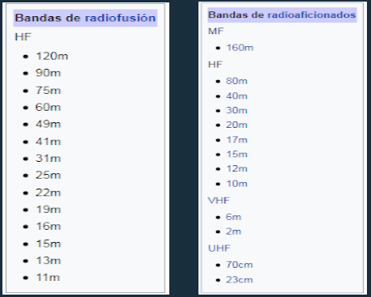
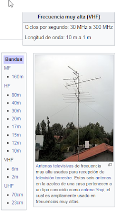
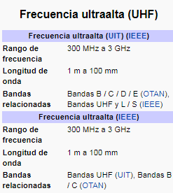
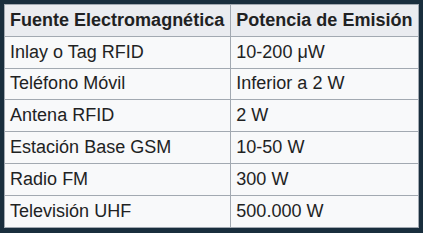
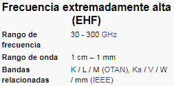

Onda Media
La onda media (OM), mentada también como frecuencia media, (del inglés: Medium Frequency; [MF]) es la banda del espectro electromagnético que ocupa el rango de frecuencias de 300 kilohercios a 3 megahercios. El principal uso de esta banda está normalizado por la Unión Internacional de Telecomunicaciones (UIT) para el servicio de radiodifusión sonora terrestre. Por ejemplo, para la Región 2, indica la banda 535kHz-1605kHz. Recientes ampliaciones añaden la sub-banda 1605.5 kHz-1705 kHz. A veces es incorrectamente llamada "onda larga" en Hispanoamérica. Por convenio internacional en este rango de frecuencias se utiliza la amplitud modulada ( AM ) o DRM (Digital Radio Mondiale) en las transmisiones.
Características de la Onda Media
El modo de propagación principal en esta banda se efectúa por una onda de superficie, lo que determina la llamada área de servicio primaria. Un segundo modo de propagación es por medio de reflexión en la ionosfera o reflexión ionosférica que produce a su vez una denominada área de servicio secundaria. Dependiendo de la potencia, el área de servicio primaria puede ser desde unos pocos hasta cientos de kilómetros durante el día, y es mayor cuanto más baja es su frecuencia. En la noche, la propagación es mejor que de día, porque desaparece la capa D de la ionósfera que absorbe fuertemente las ondas medias durante las horas de sol. Finalmente, es una banda que es sumamente vulnerable al ruido. Al ruido atmosférico (se pueden oír tormentas a varios miles de kilómetros por las ondas). Al ruido producido por el hombre. Ejemplos: la PLC, el servicio de acceso a internet vía ADSL, determinados reguladores de tensión de alumbrado, etc. Al ruido natural, propio de la ionósfera.
Sistemas qe funcionan con Onda Media
Radiodifusión
Desde principios de la radio (ya en los años 1920), las ondas en estas frecuencias se utilizan para la radiodifusión en amplitud modulada (AM) debido a la facilidad con que atraviesan obstáculos y a la relativa sencillez de los equipos de aquella época. En efecto, la estabilidad de los osciladores comienza a plantear serios problemas a partir de los 10 megahercios. Por otro lado, en aquellos años los receptores de radio a válvulas termo-iónicas tenían grandes capacidades parásitas, lo que les impedía utilizar frecuencias más altas. Las ondas medias fueron progresivamente cayendo en desuso con la llegada de la FM, que por necesitar mucho ancho de banda, fue alojada en la región de frecuencia muy alta. Las emisoras de onda media suelen albergar contenidos de noticias o información que no requieren excesiva fidelidad del sonido, mientras que las estaciones especializadas en la retransmisión de música se hallan en la FM de frecuencia muy alta.Actualmente, las frecuencias en ondas medias están siendo progresivamente reutilizadas para poder transportar audio digital (DRM). Por ejemplo, Radio France obtuvo en Francia, a partir de 2005, varias frecuencias en onda media que progresivamente están siendo transformadas en emisoras DRM. Poco después, Radio Nacional de España inició sus emisiones experimentales DRM desde su estación emisora de Arganda del Rey (España), en la frecuencia de 1359 kHz. Las estaciones de radiodifusión de onda media cubren en Europa y África las frecuencias comprendidas entre 531 y 1602 kHz, en puntos o canales predestinados separados 9 kHz uno de otro. De esta manera, las frecuencias posibles donde ubicar una estación de radiodifusión serían 531, 540, 549, 558, 567, 576, 585... y así hasta 1575, 1584, 1593 y 1602 kHz. En América del Norte la separación de canales va de 10 en 10 kHz, y está autorizado el uso de la radiodifusión comercial desde 530, 540, 550, 560, 570, 580... y así hasta la frecuencia de 1680, 1690, 1700 y 1710 kHz. Algunos países situados entre el trópico de Cáncer y el trópico de Capricornio están autorizados a instalar servicios de radiodifusión en la banda de 2300 a 2498 kHz, que - aunque en la mayor parte de receptores de consumo masivo se incluye entre las de onda corta - físicamente pertenece a la onda media por hallarse por debajo de los 3000 kHz.


Radioafición
Los radioaficionados tienen asignada una banda en esta parte del espectro: la banda de 160m, que suele abarcar desde los 1800 hasta los 2000 kHz, dependiendo de los países. A título experimental, se están autorizando estaciones de aficionados alrededor de los 500 kHz (banda de 600 metros) al desaparecer el uso de esa frecuencia para las llamadas de emergencia en el mar.
Radio ayudas
Entre los 300 y los 500 kHz existen estaciones llamadas radio ayudas o radiofaros, destinadas en origen a orientar al tráfico marítimo y complementadas desde la década de 1940 con otras destinadas a servir de balizas a la aviación. Son las instalaciones denominadas NDB, (Non-Directional Beacon o Baliza no direccional). Estas emisoras son de funcionamiento automático y emiten cada pocos segundos una combinación de letras en código morse.
Antenas de ferrita
Una peculiaridad de la radiodifusión en Onda media suele ser la presencia en el interior de los aparatos receptores de una barra, de entre 4 y 20 centímetros de longitud, compuesta de ferrita y alrededor de la cual van enrolladas varias espiras de cable muy fino. Esto da a los aparatos un carácter altamente direccional, que permite al oyente colocarlos de la manera óptima para la escucha con la barra perpendicular al lugar de procedencia de la emisión.
Radiofrecuencia (abreviado RF), también denominado espectro de radiofrecuencia, es un término que se aplica a la porción menos energética del espectro electromagnético, situada entre los 3 hercios (Hz) y 300 gigahercios (GHz). El hercio es la unidad de medida de la frecuencia de las ondas, y corresponde a un ciclo por segundo. Las ondas electromagnéticas de esta región del espectro, se pueden transmitir aplicando la corriente alterna originada en un generador a una antena.
La radiofrecuencia se puede dividir en las siguientes bandas del espectro:

A partir de 1 gigahercio, las bandas entran dentro del espectro de las microondas. Por encima de 300 gigahercios la absorción de la radiación electromagnética por la atmósfera terrestre es tan alta que la atmósfera se vuelve opaca a ella, hasta que, en los denominados rangos de frecuencia infrarrojos y ópticos, vuelve de nuevo a ser transparente. Las bandas ELF, SLF, ULF y VLF comparten el espectro de la AF (audiofrecuencia), que se encuentra entre 20 y 20.000 hercios aproximadamente. Sin embargo, estas últimas son ondas de presión, como el sonido, por lo que se desplazan a la velocidad del sonido sobre un medio material. Mientras que las ondas de radiofrecuencia, al ser ondas electromagnéticas, se desplazan a la velocidad de la luz y sin necesidad de un medio material.
Las bases teóricas de la propagación de ondas electromagnéticas fueron descritas por primera vez por Heinrich Rudolf Hertz, entre 1886 y 1888, fue el primero en validar experimentalmente la teoría de Maxwell. El uso de esta tecnología por primera vez es atribuido a diferentes personas: Alejandro Stepánovich Popov hizo sus primeras demostraciones en San Petersburgo (Rusia); Nikola Tesla en San Luis (Misuri, Estados Unidos) y Guillermo Marconi en el Reino Unido. El primer sistema práctico de comunicación mediante ondas de radio fue diseñado por Guillermo Marconi, quien en el año 1901 realizó la primera emisión trasatlántica radioeléctrica. Actualmente, la radio toma muchas otras formas, incluyendo redes inalámbricas, comunicaciones móviles de todo tipo, así como la radiodifusión.
Radiocomunicaciones
Aunque se emplea la palabra radio, las transmisiones de televisión, radio, radar y telefonía móvil están incluidas en esta clase de emisiones de radiofrecuencia. Otros usos son audio, vídeo, radionavegación, servicios de emergencia y transmisión de datos por radio digital; tanto en el ámbito civil como militar. También son usadas por los radioaficionados.
Radioastronomía
Muchos de los objetos astronómicos emiten en radiofrecuencia. En algunos casos en rangos anchos y en otros casos centrados en una frecuencia que se corresponde con una línea espectral, por ejemplo: Línea de HI o hidrógeno atómico. Centrada en 1,4204058 gigahercios. Línea de CO (transición rotacional 1-0) asociada al hidrógeno molecular. Centrada en 115,271 gigahercios.
Radar
El radar es un sistema que usa ondas electromagnéticas para medir distancias, altitudes, direcciones y velocidades de objetos estáticos o móviles como aeronaves, barcos, vehículos motorizados, formaciones meteorológicas y el propio terreno. Su funcionamiento se basa en emitir un impulso de radio, que se refleja en el objetivo y se recibe típicamente en la misma posición del emisor. A partir de este "eco" se puede extraer gran cantidad de información. El uso de ondas electromagnéticas permite detectar objetos más allá del rango de otro tipo de emisiones. Entre sus ámbitos de aplicación se incluyen la meteorología, el control del tráfico aéreo y terrestre y gran variedad de usos militares.
Resonancia magnética nuclear
La resonancia magnética nuclear estudia los núcleos atómicos al alinearlos a un campo magnético constante para posteriormente perturbar este alineamiento con el uso de un campo magnético alterno, de orientación ortogonal. La resultante de esta perturbación es una diferencia de energía que se evidencia al ser excitados dichos átomos por radiación electromagnética de la misma frecuencia. Estas frecuencias corresponden típicamente al intervalo de radiofrecuencias del espectro electromagnético. Esta es la absorción de resonancia que se detecta en las distintas técnicas de RMN.
Medicina
La radiofrecuencia se ha usado en tratamientos médicos durante los últimos 75 años, generalmente para cirugía mínimamente invasiva, utilizando ablación por radiofrecuencia o crioablación. Entre los tratamientos en los que se usa la radiofrecuencia es contra la apnea durante el sueño o para arritmias cardiacas. La diatermia es una técnica que utiliza el calor producido por la radiofrecuencia para tratamientos quirúrgicos, de tal forma que produce la coagulación de tejidos e impide que el tejido sangre tras la incisión quirúrgica. Además de cauterizar vasos sanguíneos para prevenir el sangrado excesivo, también se puede utilizar el calor producido por la diatermia para destruir tumores, verrugas y tejidos infectados. Esta técnica es particularmente valiosa en neurocirugía y cirugía del ojo. Los equipos de diatermia normalmente operan en la frecuencia de onda corta de radio (rango 1-100 MHz) o energía de microondas (rango de 434 a 915 MHz).
Tratamientos de belleza
La radiofrecuencia, en niveles de energía que no producen ablación, se usa también como tratamiento cosmético para tensar la piel, reducir la grasa (lipolisis) o promover la cicatrización. Es una técnica usada en los centros de belleza y medicina estética. El uso de la radiofrecuencia para tensar la piel tiene su base en que se produce energía que calienta el tejido, lo que estimula la producción de colágeno y elastina subcutánea, consiguiendo que se reduzcan las arrugas de la piel. En el rostro, la radiofrecuencia facial es una alternativa a un lifting quirúrgico y otras cirugías cosméticas. Entre los diferentes tipos de radiofrecuencia que existen encontramos: radiofrecuencia corporal, radiofrecuencia monopolar, radiofrecuencia abdominal, radiofrecuencia abdominal facial o radiofrecuencia unipolar. Todas ellas actúan a través del sobrecalentamiento de las diferentes capas de la piel, de forma que se consiga movilizar las diferentes células y de esta forma tersificar la dermis, darle un aspecto más rejuvenecido, potenciar la creación de nuevas células de colágeno así como la migración de fibroblastos. Así pues, el tratamiento de la radiofrecuencia basa su técnica en la emisión de ondas electromagnéticas para conseguir todos los efectos descritos anteriormente. Es un método no invasivo, con mínimos efectos secundarios y con el que poder conseguir grandes resultados en cuestión de pocas sesiones.
La banda de Frecuencias Tremendamente Bajas es la parte del espectro electromagnético que agrupa a las ondas con frecuencias menores a 3 hercios, las cuales son mucho más grandes que el planeta Tierra debido a que su longitud de onda es mayor a 100.000 km. Las ondas electromagnéticas clásicas se clasifican y estudian conforme a la frecuencia (f) con la que oscilan en el tiempo, o al periodo que tienen en el espacio - comúnmente conocido como longitud de onda (λ). El conjunto de todas las frecuencias que puede tener una onda se conoce como espectro electromagnético; el cual se subdivide en subconjuntos llamados bandas de frecuencia. Cada banda del espectro agrupa y clasifica a las ondas electromagnéticas que por tener frecuencias y longitudes de onda similares también tienen comportamientos y aplicaciones parecidos. La banda de Frecuencia Extremadamente Baja es la banda con las menores frecuencias del espectro electromagnético que contempla la Unión Internacional de Telecomunicaciones (UIT), que van de 3 a 30 [Hz]. Sin embargo, de acuerdo a la física clásica, podrían existir (en el universo) ondas electromagnéticas con frecuencias aún menores, las cuales tendrían que ser agrupadas, clasificadas y estudiadas, en una banda adicional del espectro electromagnético, la cual tendría que incluir a las ondas con frecuencias inferiores a 3 hercios. Debido a la extrema longitud de onda que las caracteriza, que no permite que quepan dentro del planeta Tierra (y por lo tanto que no puedan ser aprovechadas u observadas fácilmente), las ondas con frecuencias menores a 3 hercios han sido poco estudiadas y en general no tienen aplicaciones prácticas en nuestra vida cotidiana. La banda del espectro que agrupa y clasifica a las ondas electromagnéticas clásicas con frecuencias menores a 3 hercios se ilustra en la figura 1. Algunos nombres que se le han asignado son: banda de Frecuencias Tremendamente Bajas (TLF); o en inglés, Super Extremely Low Frequency (SELF) band, o Under Extremely Low Frequency (UELF) band.

La frecuencia extremadamente baja (o ELF, acrónimo del inglés: Extremely Low Frequency) es la banda de radiofrecuencias comprendida entre los 3 y los 30 hercios, usada en el pasado por la Armada de Estados Unidos y la Armada Soviética (y actualmente por su sucesora, la Armada Rusa) para la comunicación con submarinos sumergidos a gran profundidad y otras clases de naves.

Debido a la conductividad eléctrica del agua del mar, los submarinos se encuentran aislados de la mayoría de las comunicaciones electromagnéticas; las señales en el rango de frecuencias ELF, sin embargo, pueden penetrar a mucha más profundidad. Son dos los factores que limitan la utilidad de los canales de comunicaciones ELF: la baja tasa de transmisión de datos (de sólo unos pocos caracteres por minuto) y, en menor grado, su naturaleza unidireccional debido a lo poco práctico que resultaría instalar un transmisor del tamaño requerido en un submarino (los transmisores necesitan tener un tamaño enorme para que los usuarios puedan llevar a cabo una comunicación con éxito). En general, las señales de ELF se usaban para ordenar a los submarinos a que se elevaran a un nivel poco profundo para que pudieran recibir información de alguna otra forma.
Una de las dificultades que se presentan cuando se transmite en el rango de ELF es el tamaño de la antena. Las antenas deben tener un tamaño aproximado a la mitad de la longitud de onda con la que operan. Para las frecuencias en la banda ELF, entre los 30 y los 300 Hz, las longitudes de onda equivalentes en el vacío son del orden de los 100.000 y 10.000 kilómetros respectivamente. En comparación, el diámetro de la Tierra varía entre los 12.715 km (de polo a polo) y los 12.756 km (ecuatorial). Debido a este requisito de tamaño, para transmitir a escala internacional usando frecuencias de ELF, la Tierra en sí misma se debería usar como una antena. Sin embargo, existen otras formas de construir estaciones de radio con tamaños más reducidos gracias al alargamiento eléctrico. Estados Unidos mantenía, hasta su desmantelamiento a principios de septiembre de 2004, dos emplazamientos: uno en el Bosque Nacional de Chequamegon-Nicolet (Wisconsin) y otro en el Bosque Estatal del Río Escanaba (Míchigan). Allí se empleaban líneas de transmisión eléctricas a modo de dipolos terrestres. Estas líneas estaban colocadas en varias series de entre 22,5 y 45 km de longitud. Debido a la ineficiencia de este método, se necesitaba una gran cantidad de energía eléctrica para que el sistema pudiera funcionar.
La Tierra presenta ondas de frecuencia extremadamente baja de forma natural debido a la resonancia de la región comprendida entre la ionósfera y la superficie. Se inician con los rayos, que hacen oscilar los electrones de la atmósfera. El modo fundamental de la cavidad de la ionosfera terrestre tiene una longitud de onda igual a la circunferencia de la Tierra, que da como resultado una frecuencia de resonancia de 7,8 hercios. Esta frecuencia y otros modos resonantes más altos de 14, 20, 26 y 32 hercios aparecen como picos en el espectro ELF; este fenómeno se denomina resonancia de Schumann. También se las ha tentativamente identificado con la luna de Saturno, Titán. La superficie de Titán se cree que es un mal reflector de las ondas ELF, por lo que pueden estar reflejándose en el límite de hielo líquido de un océano subsuperficial de agua y amoníaco, predicho por algunos modelos teóricos. La ionósfera de Titán es también más compleja que la de la Tierra, con la ionosfera principal a una altitud de 1200 km, pero con una capa adicional de partículas cargadas en 63 km. Esta divide la atmósfera de Titán, hasta cierto punto en dos cámaras separadas de resonancia. La fuente natural de ondas ELF en Titán no está clara, ya que no parece ser extensa actividad de rayos. Por último, una potencia de salida de radiación ELF equivalente a 100.000 veces la potencia del Sol en luz visible puede ser irradiada por magnetares. El púlsar en la Nebulosa del Cangrejo irradia potencias de este orden en la frecuencia de 30 hercios Archivado el 4 de mayo de 2011 en Wayback Machine. La radiación de esta frecuencia es inferior a la frecuencia de plasma del medio interestelar, por lo que este medio es opaco a la misma, y no puede ser observado desde la Tierra.
La frecuencia superbaja se corresponde a las ondas electromagnéticas (ondas de radio) pertenecientes al rango de frecuencia situado entre los 30 y los 300 hercios. Poseen una longitud de onda correspondiente entre los 10.000 y 1.000 kilómetros. Este rango de frecuencia incluye las frecuencias de CA (50 y 60 hercios). Otro designación conflictiva que incluye a este rango de frecuencia es la frecuencia extremadamente baja, la cual se refiere a frecuencias entre 3 y 300 hercios. Debido a la extrema dificultad en construir radiotransmisores que puedan generar tales longitudes de onda, las frecuencias en este rango han sido usadas en muy pocos sistemas de comunicación. De todas formas, las ondas de frecuencia super bajas pueden penetrar las aguas oceánicas a una profundidad de cientos de metros, por lo tanto en las últimas décadas las fuerzas militares rusas y estadounidenses han construido enormes transmisores de radio que usan frecuencias superbajas para comunicarse con sus submarinos. El servicio naval de Estados Unidos es llamado "Seafarer" (marinero) y opera a 76 hercios. Empezó a funcionar en 1989 pero cesó en 2004 debido a avances en los sistemas de comunicación de frecuencia muy baja. El transmisor ruso se llama ZEVS y opera a 82 hercios. Los requerimientos de los receptores de frecuencias superbajas son menos exigentes que los de los transmisores porque la fuerza de la señal (dada por el ruido atmosférico) es mucho más alta que el ruido a nivel del suelo del receptor, pueden usarse pequeñas antenas para captar estas emisiones. Los radioaficionados han recibido señales en este rango usando simples receptores construidos en torno a computadoras personales, con antenas conectadas a una tarjeta de sonido del ordenador. Las señales son analizadas por un algoritmo de software llamado transformada rápida de Fourier y convertidas a sonidos audibles.
La frecuencia ultrabaja [siglas en inglés de Ultra Low Frequency (ULF)] comprende el rango de frecuencias entre 300 y 3000 hercios (3 kilohercios). Esta banda es utilizada para comunicaciones en minas por su capacidad de penetrar fácilmente la superficie terrestre. No confundir ULF con UHF, ya que esta última es utilizada, por ejemplo, en los receptores de televisión por aire (que utilizan antenas receptoras de los canales por aire), y va de los 470 a los 890 megahercios. En la parte posterior de ciertos televisores de tubo podrán encontrar las siglas o denominación UHF, o variantes similares, que indican el tipo de frecuencia que emplea el dispositivo receptor de su televisor. La frecuencia ultrabaja ha sido utilizada por las fuerzas militares para comunicaciones seguras a través de la tierra. Las publicaciones de la OTAN AGARD de la década de los '60 detallaban muchos sistemas, a pesar de las sospechas de existir muchas cosas no comentadas debido a su interés militar. Las comunicaciones a través de la tierra usando campos de conducción es conocida como "Earth Mode" y fue utilizada por primera vez en la Primera Guerra Mundial. Radioaficionados y especialistas en electrónica utilizaron este sistema para comunicaciones limitadas usando radio amplificadores conectados a electrodos insertados en la tierra. El rango de amplitud de ondas que comprenden las ULF es el siguiente:
La designación de frecuencia muy baja (VLF; Very Low Frequency, en inglés) se usa para denominar a la banda del espectro electromagnético que ocupa el rango de frecuencias de 3 a 30 kilohercios (longitudes de onda de 100 a 10 kilómetros).
En esta banda se produce la propagación por onda de superficie con baja atenuación y permite realizar enlaces de radio a gran distancia. Como inconveniente cabe destacar el escaso ancho de banda disponible, y la baja eficiencia de las antenas a tan bajas frecuencias.
La antigua estación transmisora de Grimeton (Suecia) emite cada 24 de diciembre a las 08'00 UTC en 17.2 kHz con el indicativo SAQ.

Antena emisora de VLF de Grimeton cerca de Varberg, Suecia.

La frecuencia alta u onda corta (en inglés: High Frequency [HF] o shortwave [SW]) se refiere a la banda del espectro electromagnético englobada entre los 3 y los 30 megahercios. La onda corta es una banda de radiofrecuencias en la que transmiten (entre otras) las emisoras de radio internacionales para transmitir su programación a todo el mundo y las estaciones de radioaficionados.
En estas frecuencias las ondas electromagnéticas, que se propagan en línea recta, rebotan a distintas alturas (cuanto más alta la frecuencia a mayor altura) de la ionósfera (con variaciones según la estación del año y la hora del día), lo que permite que las señales alcancen puntos lejanos e incluso den la vuelta al planeta. Se distinguen: entre 14 MHz y 30 MHz las bandas altas o bandas diurnas cuya propagación aumenta en los días de verano, y entre 3 MHz y 10 MHz las bandas bajas o nocturnas cuya propagación es mejor en invierno. Las bandas intermedias como la de radioaficionados de 10 MHz (30 m) y la de radiodifusión internacional de 25 m presentan características comunes a ambas. Las bandas nocturnas son bandas cuya propagación es mejor durante la noche, y mejor en las noches de invierno. Las bandas diurnas son bandas que, debido a la física de la ionosfera, tienen una mejor propagación de día que de noche, y mucho mejor durante los días de verano. Además, las bandas altas presentan otros modos de propagación, comunes con los de la VHF, como las Esporádicas-E. La estación del año influye no solo en la duración respectiva del día y de la noche. También influye en la llamada propagación en zona gris, que permite aprovechar una buena propagación durante algunos minutos entre zonas que comparten la misma hora solar de amanecer o puesta del sol. En radiodifusión están las bandas tropicales de 90 y 60 metros, y las bandas internacionales de 75, 49, 41, 31, 25, 22, 19, 16, 15, 13 y 11 metros. Los radioaficionados cuentan con varias bandas en alta frecuencia: las de 3, 5, 7, 10, 14, 18, 21, 24 y 28 megahercios, que corresponden a las bandas de 80, 60, 40, 30, 20, 17, 15, 12 y 10 metros respectivamente. La radio de onda corta es similar a las estaciones de onda media local (AM) que se pueden oír normalmente, solo que la señal de onda corta viaja una distancia mayor. Normalmente se utiliza el modo AM (amplitud modulada) y la BLU o SSB (Banda Lateral Única o Single Side Band) tanto superior como inferior. También se usa el modo de telegrafía CW, el RTTY, la Frecuencia Modulada, la SSTV, entre otros tipos de modulación. A pesar de lo que se piensa, no se necesita una radio extraordinaria para oír estas transmisiones provenientes de todo el mundo. Todo lo que se necesita es una radio "normal" que pueda recibir la banda de onda corta. Tales radios pueden ser muy baratas. Para oír transmisiones internacionales, puede usarse simplemente la antena telescópica que se encuentra en muchas radios de FM. Sin embargo para la recepción de transmisiones internacionales más exóticas se debe conectar un trozo de cable o alambre simple a la antena de un radio. Puede encontrarse mucha información al respecto en algunos programas en onda corta, en revistas como "ShortWave Magazine" (SWM), o a menudo en los grupos de noticias especializados, como "rec.radio.shortwave". Las bandas compiten actualmente con la programación entregada por satélite. Actualmente, en varios países las emisiones tradicionales en analógico (AM) se están sustituyendo por emisiones digitales en formato DRM.

Resultan particularmente importantes las bandas reservadas por la UIT en conjunción con la OMI, para la navegación marítima, especialmente la transpolar. El modelo GMDSS incluye radioteléfono de onda corta que además es obligatorio en determinadas áreas de navegación, especialmente las polares (con baja cobertura satelital). También se pueden recibir avisos por medio de este sistema utilizando llamada selectiva digital, aunque va quedando obsoleto ante nuevas tecnologías. Además de frecuencias reservadas a las fuerzas de seguridad y de defensa, a las transmisiones de onda corta y a los radio aficionados, existen otras mucho menos conocidas. Por ejemplo, algunas; frecuencias han sido reservadas para los aviones de línea como frecuencias secundarias cuando atraviesan los océanos; otras han sido reservadas para teléfonos inalámbricos, dispositivos de control remoto e incluso para la banda Ciudadana o CB. La identificación de productos y personas por radio frecuencia de onda corta de 13,56 megahercios se utiliza para una acción corta de hasta 1,5 metros de distancia y se basa en la acción de un campo magnético.

Una estación de radioaficionado la cual incorpra dos tranceptores de Onda Corta
La frecuencia baja u onda larga (del inglés: Low Frequency; [LF]) se refiere a la banda del espectro electromagnético, y más particularmente a la banda de radiofrecuencia, que ocupa el rango de frecuencias entre 30 y 300 kilohercios (longitud de onda de 10 a 1 kilómetro). En Hispanoamérica a veces se llama incorrectamente "onda larga" a la onda media. En esta banda operan sistemas de ayuda a la navegación aérea y marítima, como los radio faros o las radio balizas, así como sistemas de radiodifusión. Las características de la banda de onda larga son similares a las de la banda de frecuencia muy baja.

En Europa, parte del espectro de onda larga se usa para el servicio de radiodifusión de AM, entre 148,5 y 283,5 kilohercios. En el hemisferio occidental su uso principal es para control aeronáutico, navegación, información y servicios meteorológicos. Las estaciones de señal horaria MSF, DCF77, JJY y WWVB también se encuentran en esta banda.
En el rango de frecuencias de entre 40 y 80 kilohercios hay varias estaciones de tiempo y frecuencias modelo, como:
En Europa y Japón, muchos dispositivos de consumo de bajo costo contienen desde finales de los años ochenta radio relojes con un receptor de baja frecuencia que capta estas señales. Dado que estas frecuencias se propagan solo por onda terrena, la precisión de las señales temporales no se ve afectada por la variación de los caminos de propagación entre transmisor, ionosfera y receptor. En Estados Unidos, dispositivos de este tipo llegaron al mercado masivo solo después de que la potencia de salida de WWVB se incrementase en 1997 y en 1999.
Las señales de radio por debajo de los 50 kilohercios son capaces de penetrar las profundidades oceánicas hasta aproximadamente los 200 metros: cuanto más larga sea la longitud de onda, más profunda será la penetración. Las navieras de Gran Bretaña, Alemania, India, Rusia, Suecia, Estados Unidos y probablemente otras se comunican con submarinos a esas frecuencias. También, los submarinos nucleares de la Marina Real Británica que llevan misiles balísticos están aparentemente bajo la orden de monitorear la transmisión de la BBC Radio 4 de los 198 kilohercios en las aguas cercanas de Gran Bretaña. Existen rumores de que interpretan un alto repentino en la transmisión como indicador de que el Reino Unido se encuentra atacado, con lo cual sus órdenes selladas toman efecto.
Parte de la banda de onda larga se utiliza para la radiodifusión en amplitud modulada, concretamente entre 148,5 y 283,5 kilohercios. Normalmente se pueden cubrir áreas más extensas que en la onda media debido a la menor atenuación que sufren las ondas terrenas gracias a la limitada conductividad que presenta la tierra a bajas frecuencias. Las portadoras se encuentran en múltiplos exactos de 9 kHz entre 153 y 279 kHz, excepto la estación alemana en 183 kHz. Hasta los años 1970, algunas estaciones soviéticas operaron en frecuencias hasta 400 kilohercios, incluso existió una emisión a 433 kilohercios desde Finlandia. Sin embargo, emitir por encima de 400 kHz puede causar interferencias en recepción cuando la frecuencia intermedia de algunos receptores superheterodinos puede estar por debajo de 430 kHz, aunque en la práctica suele estar entre 450 y 470 kHz. Algunas estaciones, como por ejemplo Droitwich en el Reino Unido, obtiene su frecuencia de portadora de un reloj atómico. A diferencia de la onda media, que se utiliza en todo el mundo, la onda larga sólo se utiliza para radiodifusión en la región 1 de la UIT (Europa, África, Oriente Medio, Mongolia y los estados de la Commonwealth). En Estados Unidos, durante los años 1970, las frecuencias 167, 179 y 191 kHz se asignaron al Public Emergency Radio of the United States, un sistema de comunicaciones que se utilizaría en caso de ataque nuclear durante la Guerra Fría.
Una banda con un ancho de banda de 2.1 kHz (de 135.7 a 137.8 kHz) está disponible para radioaficionados en la mayoría de los países de Europa, Nueva Zelanda y dependencias de Francia en otros continentes. El récord mundial de la distancia para un contacto en doble sentido es de más de 10 000 km, desde cerca de Vladivostok hasta Nueva Zelanda. Así como código Morse convencional, muchos operadores usan código Morse de muy baja velocidad controlado por computador o modos de comunicación digital especializados de banda estrecha como PSK31, Jt65 etc. Gran Bretaña asignó una franja del espectro, de 71,6 a 74,4 kHz, en abril de 1996, a aficionados británicos que aplicaran a una Nota de Variación para usar la banda en un principio de no interferencia con potencia máxima de salida de 1 W ERP (potencia radiada efectiva). Esto se retiró el 30 de junio de 2003, luego de un número de extensiones a favor de la banda de 136 kHz europea. Una transmisión de 1 W de código Morse muy lento entre G3AQC (en Reino Unido) y W1TAG (en Estados Unidos) cruzó el océano Atlántico por un total de 5270 km (o 3275 millas) el 21 y 22 de noviembre de 2001. En Estados Unidos hay una licencia libre especial en la onda larga llamada LowFER (Low-Frequency Experimental Radio). Esta asignación experimental se sitúa entre 160 y 190 kilohercios y se conoce también como banda perdida. La operación sin licencia se permite al sur de los 60° de latitud norte, excepto en el caso de interferir con 10 estaciones de localización que hay a lo largo de la costa. La regulación en esta banda limita la potencia de emisión hasta 1 vatio, una longitud antena/plano de tierra no mayor a 15 metros, y el campo eléctrico no debe superar los 4,9 µV/m. Además, las emisiones fuera de la banda de 160-190 kilohercios tienen que estar atenuadas al menos 20 decibelios respecto al nivel de la portadora demodulada. Muchos operadores en esta banda son operadores amateur.
Las antenas que se usan a estas frecuencias son normalmente torres radiadoras, que se alimentan en la base y son aisladas del suelo, o bien torres radiadoras alimentadas por sus propias cuerdas sostenedoras (caso en el cual las torres están a tierra), antenas T, antenas L y antenas de cable largo. La altura de las antenas difiere de acuerdo al uso. Para las NDB (balizas no direccionales) la altura es de alrededor de 10 metros, mientras que para transmisores de navegación más potentes como DECCA se usan torres de alrededor de 100 m. Las antenas T tienen una altura de entre 50 y 200 metros, mientras que las antenas torre tienen por lo general una altura superior a los 150 m. La altura de las antenas para LORAN-C ronda los 190 metros para emisores por debajo de 500 kilovatios de potencia, y 400 m si emiten por encima de 1000 kW. El principal tipo de antena para LORAN-C es la torre alimentada desde tierra. Casi todas las antenas de onda larga son de la altura correspondiente a la cuarta parte de la longitud de onda radiada (λ/4). La única antena de emisión de λ/2 es la Torre de radio de Varsovia. Para radiodifusión a menudo se necesitan antenas direccionales. Estas se componen de varias torres que suelen tener la misma altura. Algunas antenas de onda larga consisten en varias torres dispuestas en círculo, con o sin una torre central. Estas antenas enfocan la potencia emitida hacia el suelo y tienen una gran zona de recepción libre de desvanecimientos. Este tipo de antena es raramente usada debido a su alto coste, a que necesitan mucho espacio, y a que los desvanecimientos son menos frecuentes que en la banda de onda media. Un ejemplo de una antena de este tipo es la de Orlunda (Suecia). Las antenas de transmisión en onda larga, para potencias altas, necesitan mucho espacio físico, y han sido causa de controversia en Estados Unidos y Europa en relación a los posibles efectos nocivos para la salud de la exposición a ondas de radio de alta potencia. A consecuencia de esta controversia, ya se ha desmontado una de las antenas en Marnach (Luxemburgo) y para finales de 2015 se cerrara el emisor de RTL Radio en 1440 kilohercios.
La frecuencia muy alta (del inglés: Very High Frequency: «VHF») se corresponde con la banda del espectro electromagnético que ocupa el rango de frecuencias de entre 30 y 300 megahercios.

La televisión, radiodifusión en FM, banda aérea, satélites, comunicaciones entre buques y control de tráfico marítimo. A partir de los 50 MHz encontramos frecuencias asignadas, según los países, a la televisión comercial; son los canales llamados "bajos" del 2 al 13. También hay canales de televisión en frecuencia ultra alta. Entre los 88 y los 108 megahercios encontramos frecuencias asignadas a las radios comerciales en Frecuencia Modulada o FM. Se le llama "FM de banda ancha" porque para que el sonido tenga buena calidad, es preciso aumentar el ancho de banda. Entre los 108 y 136,975 megahercios se encuentra la banda aérea usada en aviación. Los radiofaros utilizan las frecuencias entre 108,7 y 117,9 megahercios. Las comunicaciones por voz se realizan por arriba de los 118 MHz , utilizando la amplitud modulada. En 137 MHz encontramos señales de satélites meteorológicos. Entre 144 MHz y 146 MHz, incluso 148 MHz en la región 2, encontramos las frecuencias de la banda de 2 m de radioaficionados. Entre 156 y 162 megahercios, se encuentra la banda de frecuencia muy alta internacional reservada al servicio radiomarítimo. Por encima de esa frecuencia encontramos otros servicios como bomberos, ambulancias, radio-taxis y ferrocarriles etc.
UHF (siglas del inglés: Ultra High Frequency) o frecuencia ultraalta es una banda del espectro electromagnético que ocupa el rango de frecuencias de 300 megahercios a 3 gigahercios. En esta banda se produce la propagación por onda espacial troposférica, con una atenuación adicional máxima de 1 decibelio si existe despejamiento de la primera zona de Fresnel. Debido a la tecnología utilizada, el nombre se usó en España también para referirse al canal La 2 de TVE hasta 1990, habiendo caído esta nomenclatura progresivamente en desuso en los últimos años.
Televisión, uno de los servicios UHF más conocidos por el público son los canales de televisión tanto locales como nacionales. Según los países, algunos canales ocupan las frecuencias entre algo menos de 470 MHz y unos 790 MHz (en España, desde la disposición 4845 del BOE para dejar libre el rango de 790-862 MHz a la tecnología 4G y 5G). Actualmente se usa la banda UHF para emitir la Televisión Digital Terrestre (TDT).


En Estados Unidos y otros países americanos, existe el servicio FRS, que permite a particulares utilizar transmisores portátiles de baja potencia para uso no profesional. Sus equivalentes en Europa son los radiotransmisores de uso personal PMR446.
Históricamente, las primeras frecuencias UHF utilizadas en telefonía móvil en Europa lo fueron alrededor de los 400MHz (sistema Radiocom 2000 en Francia, sistema NMT en Escandinavia). Con la llegada de la norma internacional GSM, las frecuencias afectadas en UHF se sitúan alrededor de los 900 MHz. La norma DCS18010 de telefonía móvil es similar a la GSM, sólo que la frecuencia es doble (1800 MHz). Por esa misma razón el alcance es algo inferior, pero también existe más espectro para los clientes y la denegación de conexión por falta de canales en zonas altamente pobladas es menos frecuente. En las regiones 2 (América) y 3 (Asia y el Pacífico Sur) de la UIT, la norma GSM se llama PCS1900 y la frecuencia afectada es la de 1900 MHz.

La identificación de productos utilizando la banda de frecuencia UHF entre 860 y 960 MHz no deja de ser el "bonsái" de las comunicaciones de radio porque se utilizan antenas de un grosor de micras y porque las potencias de emisión de los tags RFID no superan los 200μW. A continuación se muestra una tabla de referencia de las potencias de emisión para diversos dispositivos emisores de ondas electromagnéticas:

En Europa la entidad reguladora de las frecuencias utilizadas por la tecnología RFID es el Instituto Europeo de Normas de Telecomunicaciones y la normativa oficial normalizada está descrita en la norma EN 302 208. En Europa hay dos bandas autorizadas, la banda Baja 865,6 a 867,6 MHz, con una potencia de emisión permitida de 2 vatios PRA, que es equivalente a 3,2 vatios PIRE y la banda Alta del 915 al 921 MHz con una potencia de emisión permitida de 4 vatios PRA. En América, hay varias entidades que regulan las características de esta señal, entre ellas se encuentra la Comisión Federal de Comunicaciones de EE. UU., la CRTTC (Canadian Radio-television and Telecommunications Commission) de Canadá, la ANATEL (Agência Nacional de Telecomunicações) de Brasil, entre otras, las cuales tienen una normativa local, en la que se indica las bandas de uso en cada espacio en las que regulan, en donde la frecuencia más usada va del 902 al 928 MHz con una potencia de emisión permitida de 4 vatios PIRE. En algunos países esta banda se encuentra parcialmente autorizada para operar, siendo frecuentemente el uso del 915 - 928 MHz, dependiendo de las regulaciones, como en el caso del Perú.
La transmisión punto a punto de ondas de radio se ve afectada por múltiples variables, como la humedad atmosférica, la corriente de partículas del Sol llamada viento solar, y la hora del día en que se lleve a efecto la transmisión de la señal. La energía de la onda de radio es parcialmente absorbida por la humedad atmosférica (moléculas de agua). La absorción atmosférica reduce o atenúa la intensidad de las señales de radio para grandes distancias. Los efectos de la atenuación aumentan de acuerdo a la frecuencia. Usualmente, las bandas de señales de UHF se degradan más por la humedad que bandas de menor frecuencia como la VHF. La capa de la atmósfera denominada ionosfera, puede ser útil en las transmisiones a distancias largas de señales de radio con frecuencias más bajas (VHF, etc.). La UHF puede ser de más provecho por el ducto troposférico donde la atmósfera se calienta y enfría durante el día. La principal ventaja de la transmisión UHF es la longitud de onda corta que es debido a la alta frecuencia. El tamaño del equipo de transmisión y recepción (particularmente antenas), está relacionado con el tamaño de la onda. En este caso microondas. Los equipos más pequeños, y menos aparatosos, se pueden usar con las bandas de alta frecuencia. La UHF es ampliamente usada en sistemas de transmisión y recepción para teléfonos inalámbricos. Las señales UHF viajan a través de trayectorias que son las líneas de vista. Las transmisiones generadas por radios de transmisión y recepción (transceptores) y teléfonos inalámbricos no viajan muy lejos como para interferir con otras transmisiones locales. Algunas comunicaciones públicas seguras y de negocios son tomadas en UHF. Las aplicaciones civiles como GMRS, PMR446, UHF CB, y los estándares WiFi 802.11b, 802.11g y 802.11n (los más habituales en Europa) son usos populares de frecuencias UHF. Para propagar señales UHF a una distancia más allá de la línea de vista se usa un repetidor.
La frecuencia superalta u onda centimétrica (en inglés: Super High Frequency, SHF) es una banda del espectro electromagnético que ocupa el rango de frecuencias de 3 a 30 gigahercios, poseyendo una longitud de onda de entre 10 y 1 centímetro (de donde se deriva el mentado nombre de banda u onda centimétrica).

La Unión Internacional de las Telecomunicaciones, una organización civil internacional establecida para normalizar las telecomunicaciones a nivel mundial, ha establecido que las frecuencias superaltas están localizadas entre 10 y 1 centímetro. Las microondas son parte de estas frecuencias, pero además incluye a las frecuencias ultra altas (UHF) y las frecuencias extremadamente altas (EHF) Las frecuencias superaltas son relativamente cortas para las ondas de radio. Estas frecuencias son utilizadas para dispositivos de microondas, teléfonos móviles (W-CDMA), WLAN, y los radares de última generación. El estándar Wireless USB utilizará aproximadamente 1/3 del total de esta porción del espectro radioeléctrico.
Algunos usos son las IEEE 802.11a/b/g/n/ac Wireless LANs, subidas y bajadas de satélites, y enlaces terrestres de alta velocidad (a veces conocidos como "backhauls").
En esta banda se produce la propagación por trayectoria óptica directa.
Televisión vía satélite en las bandas C y Ku, radioenlaces, radar.
La frecuencia extremadamente alta u onda milimétrica (del inglés: Extremely High Frequency; EHF) configura la banda de frecuencias más alta en la gama de las radiofrecuencias. Comprende las frecuencias de 30 a 300 gigahercios. Esta banda tiene una longitud de onda de 10 a 1 milímetros, motivo por el cual se le da el mencionado nombre de banda u onda milimétrica (onda-mm). Existen diversas aplicaciones en el campo de las telecomunicaciones para las ondas milimétricas, siendo recientemente utilizadas por radios microondas de corto alcance (generalmente menor a 1 km). Debido a que esta banda está comenzando a utilizarse en telecomunicaciones, prácticamente se encuentra libre en el espectro para su explotación.

Es comúnmente utilizada en radioastronomía. También es de utilidad para sistemas de radar de alta resolución.